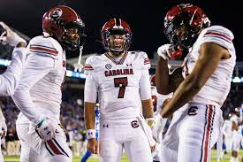

The South Carolina Gamecocks will kick off their season this Saturday, September 2nd. They will face neighboring rivals North Carolina Blue Devils, a rematch of the Dukes Mayo Bowl from two seasons ago. The Gamecocks will be looking to build of the strong finish they had last season with the two big wins over Tennessee and Clemson. Head Coach Shane Beamer has been improving every year since he took control of the program, and the fans have big expectations for his third year.
The team will be lead by star quarterback Spencer Rattler, who will be looking to become more concistant in his second year at the helm. The team ended its long drought of wins against Clemson last year and will be looking to keep the fans happy with more big wins this year. The first home game of the season is against Furman. The Gamecocks will be looking to become a contender in the SEC east and give Georgia some real competition this year.

| Star Player | Number |
|---|---|
| SPENCER RATTLER | 7 |
| ANTWANE WELLS JR. | 3 |
| NICK EMMANWORI | 21 |